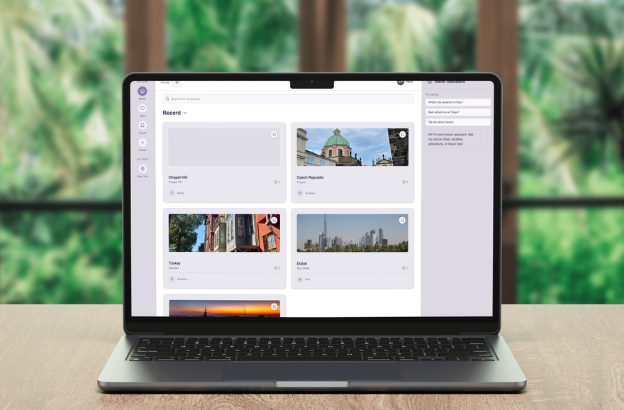

A collaborative travel itinerary web app built with Next.js, React, and Supabase — featuring social sharing, real-time updates, and an AI travel assistant powered by OpenAI.

Type
Personal Project
Designed & developed solo
Role
Full-Stack & UI/UX
Design · Frontend · Backend
Stack
Next.js · Supabase
OpenAI · shadcn/ui · Figma
Status
Live on Vercel
Deployed & accessible
01 / Overview
TripShare is a collaborative travel itinerary web application designed to help users plan, share, and discover trips within a social travel community. It combines the structure of an itinerary builder with the discovery and interaction model of a social feed — all in one place.
The platform brings together three distinct experiences: itinerary creation for logged-in users to build detailed trip plans, community discovery to browse, like, and save others' itineraries, and an AI travel assistant for real-time destination ideas and planning guidance powered by OpenAI.
By combining social features, real-time functionality, and AI-powered interaction, TripShare demonstrates how modern web technologies can support a community-driven approach to travel planning.
View Live AppTravel planning is fragmented — notes apps, spreadsheets, group chats. TripShare puts the plan, the community, and an AI assistant in one place, removing the friction of coordinating across tools.
Design-first in Figma using shadcn/ui's component system, then build with Next.js and Supabase for a real backend — not a prototype, but a fully deployed, working application.
App Preview — Itinerary Discovery Feed
Tokyo in 7 Days
Amalfi Coast
Iceland Road Trip
02 / Key Features
Five core features that together form a complete social travel planning experience — from building your first itinerary to getting AI-powered recommendations on the fly.
Sign-up and login with personalized experiences. Itineraries, likes, and saved posts are all linked to individual user accounts via Supabase Auth.
Logged-in users can build structured trip plans — adding cities, descriptions, locations, and photos in a clean, step-by-step format.
Browse community itineraries, view trip details, like and save posts, and search across the full library of shared trips. Dedicated pages for saved and liked content.
An integrated chat panel powered by OpenAI provides destination ideas, itinerary suggestions, and travel planning guidance — in real time, without leaving the app.
Users can switch between light, dark, or system theme modes — improving accessibility and letting each user set the interface to their preference.
Built on Supabase's real-time subscriptions — likes, saves, and new posts update across the feed without a page refresh, keeping the community experience live.
AI Travel Assistant — In-App Chat
TripShare AI · Powered by OpenAI
Theme Customization — Light & Dark Modes
Light Mode
Dark Mode
03 / Tech Stack
Every choice in this stack was deliberate — optimizing for a great developer experience, real backend functionality, and a polished UI that didn't start from scratch.
App router, server-side rendering, and API routes. Handles routing, performance, and the bridge between the React frontend and Supabase backend.
Component-based architecture for the UI. Pairs with shadcn/ui for a consistent design system built on Radix UI primitives and Tailwind CSS.
PostgreSQL database with real-time subscriptions and built-in authentication. Handles user accounts, itinerary storage, likes, saves, and live feed updates.
Powers the in-app AI travel assistant. The chat panel sends user queries to the OpenAI API and streams responses back into the UI without page reloads.
Pre-built, accessible component library built on Radix UI and Tailwind. Accelerated UI development while maintaining full control over styling and behavior.
Full design work done in Figma before a single line of code — layouts, component states, light/dark themes, and responsive breakpoints all designed first.
"Supabase made the backend genuinely simple — authentication, the database, and real-time updates are all one service. It let me focus on product decisions rather than infrastructure, which is the right trade-off for a solo project."
04 / Process
Before writing any code, I built the full design in Figma — every screen, both light and dark themes, and the key component states. Designing first meant I could make layout and interaction decisions cheaply, before the cost of changing them was measured in code refactors.
With the design in place, I mapped out the Supabase schema: users, itineraries, cities, locations, likes, and saves. Getting the relational structure right before building the UI meant I didn't have to rewrite queries mid-feature — the data model drove the component structure.
Supabase Auth handled the heavy lifting for sign-up and login. The challenge was connecting auth state to the app's social features — ensuring likes, saves, and created itineraries were always tied to the right user and persisted correctly across sessions.
The itinerary creation flow was the most complex UI piece — a multi-step form that lets users add cities, descriptions, locations, and photos in sequence. Using shadcn/ui components sped up the form work considerably, letting me focus on the state management and validation logic.
The AI chat panel was the last major feature. I connected the OpenAI API through a Next.js API route so the key never exposes to the client, then wired up streaming responses so answers appear token by token — making the interaction feel live rather than waiting for a full response block.
Vercel's Next.js-native deployment made shipping straightforward — environment variables for Supabase and OpenAI keys, automatic preview deployments on every push, and a production URL from day one. The app has been publicly accessible since launch.
05 / Reflection
The itinerary creator's multi-step state management — coordinating city additions, location lists, and photo uploads in a single form without the state collapsing.
Watching the AI assistant stream a real, contextual travel plan in response to a user query. It's the moment the product went from a CRUD app to something that felt genuinely useful.
Collaborative itineraries — letting multiple users edit a shared trip plan in real time. Supabase's real-time infrastructure is already in place; it's a product and UI problem now.
From design in Figma to a live Vercel deployment — TripShare is a complete, working product. It combines a real backend, community social features, and AI travel assistance in a single, accessible web app.
Open TripShare